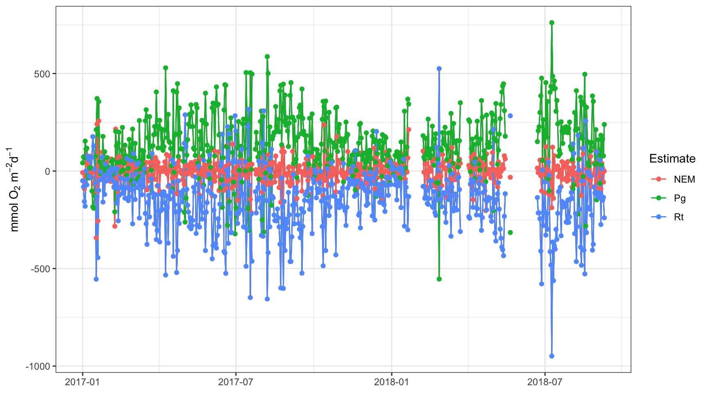

The Odum method
Get the lesson R script: odum.R
Get the lesson data: download zip
Lesson Outline
Lesson Exercises
Goals and Motivation
This lesson will teach you how to use functions in the WtRegDO package to estimate rates of ecosystem metabolism in our example datasets. As in the detiding lesson, we’ll first use the SWMPr package to import and prepare our data for use with WtRegDO. We’ll also explore some ways we can evaluate how tidal advection may have influenced the metabolism estimates and how well detiding may have worked to remove this influence. Background information on SWMPr is here and background information on detiding is here.
By the end of this lesson, you should know how or find the resources to be able to do the following:
- Import, clean, and combine data from our example datasets for use with the WtRegDO package
- Understand the basics of how ecosystem metabolism is calculated
- Use functions in WtRegDO to calculate metabolism
- Evaluate potential influences of the tide on metabolism
- Use tools in WtRegDO to evaluate effectiveness of detiding
Data prep for metabolism
We’ll start with a bit of review from last time by using functions in the SWMPr and dplyr packages to prepare our data for estimating metabolism. The format we used for the detiding functions last time is the same format we need for the metabolism functions.
Remember, the help files for each function are your friend. In this session, we’ll be using the ecometab function (from WtRegDO, not SWMPr). You can see input data that you need at the bottom of the help file (?ecometab) and use that as a model for how your data should be formatted.
The SAPDC data that comes with WtRegDO is used in the help file:
library(WtRegDO)
head(SAPDC)## DateTimeStamp Temp Sal DO_obs ATemp BP WSpd Tide
## 1 2012-01-01 00:00:00 14.9 33.3 5.0 11.9 1022 0.5 0.8914295
## 2 2012-01-01 00:30:00 14.9 33.4 5.5 11.3 1022 0.6 1.0011830
## 3 2012-01-01 01:00:00 14.9 33.4 5.9 9.9 1021 0.6 1.0728098
## 4 2012-01-01 01:30:00 14.8 33.3 6.4 10.0 1022 2.4 1.1110885
## 5 2012-01-01 02:00:00 14.7 33.2 6.6 11.4 1022 1.3 1.1251628
## 6 2012-01-01 02:30:00 14.7 33.3 6.1 10.7 1021 0.0 1.1223799We need to use the following steps with our SWMP data to make it look like SAPDC:
- Load the libraries we need (SWMPr, dplyr)
- Import the water quality data
- Import the weather data
- Clean the QAQC codes in both
- Combine the two datasets
- Select and rename the relevant columns
- Deal with missing observations
Here’s a simple workflow we can use.
# step 1
library(SWMPr)
library(dplyr)
# step 2
apadbwq <- import_local(path = 'data', station_code = 'apadbwq')
# step 3
apaebmet <- import_local(path = 'data', station_code = 'apaebmet')
# step 4
keeps <- c('0', '1', '2', '3', '4', '5')
apadbwq <- qaqc(apadbwq, qaqc_keep = keeps)
apaebmet <- qaqc(apaebmet, qaqc_keeep = keeps)
# step 5
apa <- comb(apadbwq, apaebmet, timestep = 60, method = 'union')
# step 6
apa <- select(apa,
DateTimeStamp = datetimestamp,
Temp = temp,
Sal = sal,
DO_obs = do_mgl,
ATemp = atemp,
BP = bp,
WSpd = wspd,
Tide = depth
)
# step 7
apa <- na.omit(apa)Now we should be ready to go with the functions in WtRegDO.
Exercise 1
Repeat the above workflow for the Sapelo Island data in our data folder.
- Open a new script in your RStudio project, save it with an informative title (e.g,
odum.R), and add a section header withCtrl + Shift + R. - Load the SWMPr and dplyr packages with the
libraryfunction. - Import
sapdcwqwithimport_local. - Import
sapmlmetwithimport_local. - Clean both with
qaqckeeping the flagsc('0', '1', '2', '3', '4', '5'). - Combine the two with
comb. Use a 60 minute time step and use the union option. - Simultaneously rename and select date/time (
DateTimeStamp = datetimestamp), water temperature (Temp = temp), salinity (Sal = sal), dissolved oxygen (DO_obs = do_mgl), air temperature (ATemp = atemp), barometric pressure (BP = bp), wind speed (WSpd = wspd), and tidal height (Tide = depth) columns in the Sapelo Island dataset with theselectfunction from dplyr. - Remove missing rows with
na.omit.
Estimating metabolism
Simply put, ecosystem metabolism is a measure of the balance between production and respiration processes that create and consume organic matter. We can use these measures to characterize productivity in aquatic environments as a rate, as compared to “surrogate” snapshot measures like nutrient or chlorophyll concentrations. These standardized rate estimates allow us to make inferences about system productivity (i.e., is a site/reserve a source or sink of organic matter) and allow us to more easily compare conditions across reserves.
The Odum “open-water” method is a commonly used approach to estimating metabolism (Odum 1956). It uses the dissolved oxygen time series in a simple mass-balance equation to infer rates of production and respiration:
\[ \frac{\delta O_2}{\delta t} = GPP - ER + D \]
where the change in dissolved oxygen over time is a balance between processes that create organic matter (gross primary production, \(GPP\)), consume organic matter (ecosystem respiration, \(ER\)), and gas exchange between the air-sea interface (\(D\)). Production and respiration are biological processes (that can be influenced by physical proceses, i.e., the tide) and the air-sea gas exchange is a physical process influenced by local conditions (gradient differences, air temperature, wind, etc.). Accurate quantification of each parameter is critical to estimating metabolism.
A more detailed equation as an expansion of the above is:
\[ H\frac{\delta O_2}{\delta t} = GPP - ER + k_{0_2}\left(O_2 - O_{2sat}\right) - uH\frac{\delta O_2}{\delta x} - vH\frac{\delta O_2}{\delta y} \]
where metabolism is an areal rate, gas exchange is estimated as the gas transfer velocity \(k_{0_2}\) multiplied by the difference between the air-sea oxygen gradient, and the effect of the tide on the dissolved oxygen gradient in two lateral dimensions.
At the daily scale, metabolism is calculated as the integration of the dissolved oxygen time series, corrected for gas exchange. Respiration is assumed constant over the 24 hour period and is estimated as the nighttime portion of the dissolved oxygen time series. Production occurs during the day and is estimated as the integration of the DO curve during daylight hours corrected for respiration. The parameters \(GPP\), \(ER\), and \(k_{0_2}\left(O_2 - O_{2sat}\right)\) are estimated from the time series, and the tidal influence, \(uH\frac{\delta O_2}{\delta x}\) and \(vH\frac{\delta O_2}{\delta y}\), is approximated as the difference between the observed and detided dissolved oxygen from the wtreg function.
When all is said and done, you’ll end up with three measures describing metabolism:
\[ NEM = GPP - ER \] Net ecosystem metabolism is the difference between production and respiration. Positive values imply autotrophic processes dominate and organic matter is being produced at a rate that exceeds respiration or decomposition. Negative values imply a heterotrophic system where organic matter is being consumed quicker than it is being produced. Strongly heterotrophic systems may have chronic water quality issues associated with eutrophication.
The ecometab function in WtRegDO estimates all of the parameters for you, excluding the detiding process, which is done outside of ecometab with the wtreg function. More on this later. Here’s how we use ecometab with our example dataset on the observed dissolved oxygen time series. Note that we have to use WtRegDO::ecometab to use the metabolism function from WtRegDO. The SWMPr package also has an ecosystem metabolism function, but it is not under active development as part of this project and doesn’t include all of the features available in WtRegDO.
tz <- attr(apa$DateTimeStamp, which = 'tzone')
lat <- 29.6747
long <- -85.0583
apaeco <- WtRegDO::ecometab(apa, DO_var = "DO_obs", tz = tz, lat = lat, long = long)
head(apaeco)## Date Pg Rt NEM
## 2016-12-31 2016-12-31 NA NA NA
## 2017-01-01 2017-01-01 41.80904 -49.6792668 -7.870229
## 2017-01-02 2017-01-02 72.85456 -80.8782026 -8.023645
## 2017-01-03 2017-01-03 65.91970 -156.1426918 -90.222996
## 2017-01-04 2017-01-04 153.47355 -180.3388325 -26.865281
## 2017-01-05 2017-01-05 111.50119 0.7407608 112.241953The output is returned at the daily scale because the estimates are based on integration of the dissolved oxygen time series each “metabolic” day (sunrise to sunrise each 24 hour period). The values Pg, Rt, and NEM are production, respiration and net ecosystem metabolism (as the difference between production and respiration) as mmol of O\(_2\) m\(^{-2}\) d\(^{-1}\). These are areal estimates (per square meter) corrected for the total depth at each site.
We can plot these results using the plot function from WtregDO:
plot(apaeco)Or as the daily values:
plot(apaeco, by = 'days')
There are a few patterns in the plots that we can use to make inferences about metabolism in this system. First, production and respiration at this site increase in the summer and decrease in the winter. This is a seasonal pattern observed at most locations. Second, the NEM calculations hover around zero and are positive (net autotrophic, source) when production exceeds respiration and negative (net heterotrophic, sink) when production is less than respiration. Often times, NEM is used to make broad statements about ecosystem function.
Take special note of the times when production is negative and respiration is positive. These are “anomalous” estimates that suggest a violation in the assumptions of the method, possibly related to the tide.
Exercise 2
Now we can estimate metabolism on the Sapelo Island dataset from Exercise 1.
- Create a new section in your script using
Ctrl + Shift + rand give it an appropriate name. - Use the
ecometabfunction from WtRegDO on thesapdataset you created in Exercise 1. Use the following for the required arguments:DO_var = 'DO_obs',tz = 'America/Jamaica',lat = 31.39, andlong = -81.28. Don’t forget to useWtRegDO::ecometabfor the function. - Plot the results with the
plotfunction. Evaluate the results at the daily scale using theby = 'days'argument. When do you see anomalous values?
Evaluating metabolism
In the detiding lesson, we showed how you can plot the dissolved oxygen data to understand if the tide is influencing the observations. Now, we are using the metabolism estimates as our indicator of tidal influence since our end goal is to produce more precise and reliable measures of metabolism.
Your first clue as to whether your metabolism estimates are tidally influenced is to evaluate the “anomalous” values. These are times when production is negative and respiration is positive, likely because the diel DO curve did not follow the typical sunset, sunrise pattern. In many cases, this may be the result of the tide. This is an example from the SAPDC dataset.
library(ggforce)
dts <- as.Date(c('2012-02-01','2012-02-08'))
data(metab_obs)
p <- plot(metab_obs, by = 'days') + facet_zoom(x = Date >= as.numeric(dts[1]) & Date <= as.numeric(dts[2]), zoom.size = 1)
p
We can quantify this using the meteval function.
meteval(apaeco)## $meanPg
## [1] 138.136
##
## $sdPg
## [1] 155.4357
##
## $anomPg
## [1] 14.82821
##
## $meanRt
## [1] -141.9674
##
## $sdRt
## [1] 161.0636
##
## $anomRt
## [1] 15.55154
##
## $DOcor.month
## [1] "01" "02" "03" "04" "05" "06" "07" "08" "09" "10" "11" "12"
##
## $DOcor.cor
## [1] 0.01124528 -0.04964595 0.03091414 0.15496844 -0.11433855 -0.25926542
## [7] -0.25921987 -0.26123156 -0.38141446 -0.52827458 -0.33655399 -0.19452271
##
## $month
## [1] "01" "02" "03" "04" "05" "06" "07" "08" "09" "10" "11" "12"
##
## $Pgcor
## [1] -0.31015662 -0.13357894 -0.13923646 -0.04536785 -0.26448068 -0.20254141
## [7] -0.28590281 0.07297364 -0.24839409 -0.44579878 -0.51048148 -0.35059704
##
## $Rtcor
## [1] -0.17000474 -0.27287629 -0.24745982 -0.22291832 -0.50052099 -0.28982216
## [7] -0.35441571 0.02390098 -0.28955673 -0.29885011 -0.43291104 -0.17398154We get several measures from this function that provide clues about how well the assumptions for metabolism are met in the resulting estimates. The first six are most important:
meanPg: The mean production across the time series.sdPg: The standard deviation of production.anomPg: The percentage of days when production was negative (anomalous).meanRt: The mean respiration across the time series.sdRt: The standard deviation of respiration.anomRt: The percentage of days when respiration was positive (anomalous).
Our percentage of anomalies should be as close to zero as possible. Detiding can help with this, but not always.
Now, we can use detiding to try to improve these summaries and get more precise and accurate metabolism estimates. The process for estimating metabolism is the same as above, except we use the detided results as input. First, we detide (see the last lesson):
apadtd <- wtreg(apa, tz = tz, lat = lat, long = long)Then we use the detided results to estimate metabolism. Note how we are using the 'DO_nrm' column as input.
apadtdeco <- WtRegDO::ecometab(apadtd, DO_var = "DO_nrm", tz = tz ,lat = lat, long = long)We plot the data and use the meteval function to assess how well we did.
plot(apadtdeco, by = 'days')meteval(apadtdeco)## $meanPg
## [1] 58.60002
##
## $sdPg
## [1] 43.49517
##
## $anomPg
## [1] 5.96745
##
## $meanRt
## [1] -62.31011
##
## $sdRt
## [1] 41.80845
##
## $anomRt
## [1] 5.96745
##
## $DOcor.month
## [1] "01" "02" "03" "04" "05" "06" "07" "08" "09" "10" "11" "12"
##
## $DOcor.cor
## [1] 0.034750433 0.005221224 -0.236460860 -0.039854283 -0.140443711
## [6] -0.044812598 -0.050131136 0.040828270 -0.108051494 -0.536690351
## [11] -0.088890072 -0.078972568
##
## $month
## [1] "01" "02" "03" "04" "05" "06" "07" "08" "09" "10" "11" "12"
##
## $Pgcor
## [1] -0.13341094 -0.20321977 -0.45556649 -0.22228797 -0.24034050 -0.09448502
## [7] -0.19577008 0.26713212 0.03163330 -0.06530112 0.06987799 0.32675551
##
## $Rtcor
## [1] -0.38363023 -0.50577561 -0.40998238 -0.35009095 -0.29453600 -0.31592657
## [7] -0.09992263 0.38564738 0.30133841 0.06983676 0.33413642 0.11815497From these results, we see that we’ve reduced the anomalous production and respiration estimates by about ten percent each. This is an improvement, although we have to be extra, extra careful that detiding didn’t smooth the dissolved oxygen time series more than it should, i.e., we don’t want detiding to remove both physical and biological components of the signal. A simple way to assess if you’ve removed too much of the signal is to evaluate the mean production and respiration estimates before and after detiding. In theory, they should be similar because tidal influences are observed at the daily scale and their effects should average out over time. In this case, we’ve reduced production and respiration by more than half that observed in the raw data. This suggests we may have removed more from the dissolved oxygen time series than we should have.
So, we have to detide our results again, but this time we use different window widths in the weighted regression. Unfortunately, choosing window widths is a bit of trial and error. The default values for the wtreg function are four days, 12 hours, and half the tidal height range. This means that each individual regression in the moving window for wtreg gives higher importance to observations that are within four days, 12 hours, and half the tidal height range of the value at the center of the window of each regression. In other words, observations that have characteristics similar to the value at the center of the window are given higher influence in how the regression is fit. We can tweak these values to determine the degree of “smoothness” or weighting used in the regression. For example, if we want to use 12 days, 12 hours, and 40% of the full tidal range for the window widths:
# use different windows for detiding
apadtd2 <- wtreg(apa, tz = tz, lat = lat, long = long, wins = list(12, 12, 0.4))
# estimate metabolism
apadtdeco2 <- WtRegDO::ecometab(apadtd2, DO_var = "DO_nrm", tz = tz ,lat = lat, long = long)Then plot:
plot(apadtdeco2, by = 'days')
And run meteval:
meteval(apadtdeco)## $meanPg
## [1] 58.60002
##
## $sdPg
## [1] 43.49517
##
## $anomPg
## [1] 5.96745
##
## $meanRt
## [1] -62.31011
##
## $sdRt
## [1] 41.80845
##
## $anomRt
## [1] 5.96745
##
## $DOcor.month
## [1] "01" "02" "03" "04" "05" "06" "07" "08" "09" "10" "11" "12"
##
## $DOcor.cor
## [1] 0.034750433 0.005221224 -0.236460860 -0.039854283 -0.140443711
## [6] -0.044812598 -0.050131136 0.040828270 -0.108051494 -0.536690351
## [11] -0.088890072 -0.078972568
##
## $month
## [1] "01" "02" "03" "04" "05" "06" "07" "08" "09" "10" "11" "12"
##
## $Pgcor
## [1] -0.13341094 -0.20321977 -0.45556649 -0.22228797 -0.24034050 -0.09448502
## [7] -0.19577008 0.26713212 0.03163330 -0.06530112 0.06987799 0.32675551
##
## $Rtcor
## [1] -0.38363023 -0.50577561 -0.40998238 -0.35009095 -0.29453600 -0.31592657
## [7] -0.09992263 0.38564738 0.30133841 0.06983676 0.33413642 0.11815497In this case, choosing different window widths didn’t do much for affecting the results. Some sites are like that and it relates to problems seen with the evalcor function, i.e., there are substantial times when the tidal height is correlated with the sun angle meaning detiding will over-smooth the results by removing both the biological and physical components of the time series. For other cases, sometimes there isn’t a strong diel signal to begin width, making it incredibly difficult to accurately estimate production and respiration.
Generally, you should test window widths in the range of 1 to 12 days, 1 to 12 hours, and 0.2 to 1 as the proportion of the tidal height range. Windows larger than these upper values reduce the effectiveness of the moving window approach by making it more similar to a global regression, whereas very small windows will produce results that severely overfit the observations.
You can try different combinations until you get a desirable result (low anomalous values, similar means). This R Shiny application shows several examples for different sites - you can use it to get a feel for how changing the window widths can influence the results. Finding an “optimal” combination can be time consuming and in many cases there may not be a combination that is ideal. If this is the case, consider whether detiding is appropriate at your site, and if so, when would detiding be appropriate. Even if detiding works, production may be very low and a diel oxygen signal may not be obvious at a site independent of the tide.
Here are some rules to evaluate detiding:
- Create a plot of the observed dissolved oxygen data relative to tidal height. How well do they track at the daily scale?
- Evaluate the
evalcorfunction before you detide to see at which times of year detiding could work well and which times it might not. - Estimate metabolism with
ecometabusing the observed DO time series. Evaluate the results withplotandmeteval. How many anomalous metabolism estimates do you see? What are the mean production and respiration estimates? - Detide the results with the default settings and use those to estimate metabolism. Evaluate the results with
plotandmeteval. How many anomalous metabolism estimates do you see? What are the mean production and respiration estimates? Do these differ from the observed results? - If you don’t see results that help, try a different window width combination for detiding. It may be useful to test out the extremes, e.g.,
wins = list(1, 1, 0.1)orwins = list(12, 12, 1). Always plot the results. If nothing works, consider not using detiding at that site.
Exercise 3
Our Sapelo Island dataset works well with detiding. Use the wtreg function to detide the results with the default settings. Evaluate the results before and after detiding.
Create a new section in your script using
Ctrl + Shift + rand give it an appropriate name.Using the
sapdataset from Exercise 2, filter (from dplyr) the dataset to one year to speed up the process. Use the following.sap <- filter(sap, DateTimeStamp >= as.Date('2019-01-01') & DateTimeStamp <= as.Date('2019-12-31'))Run
evalcorusingtz = 'America/Jamaica',lat = 31.39, andlong = -81.28. View the plot to verify the correlations are low.Run
wtregonsapusing the same inputs asevalcor.Run
WtRegDO::ecometabtwice, first on the observed time series usingDO_var = 'DO_mgl'and then on the detided time series usingDO_var = 'DO_nrm'options. Save them both to different objects.Plot the results before and after detiding and evaluate the differences in the metabolism results using
meteval.
Summary
In this lesson, we learned how to estimate metabolism and how to use detiding results to evaluate if an improvement was observed to produce more precise and accurate metabolism results. Detiding is a bit of trial and error. If it works well at a site, it should be fairly obvious without having to iterate too much on selecting window widths. In other cases, a more systematic approach to choosing the optimal window widths could be used. In the latter case, try to follow the guidelines here.